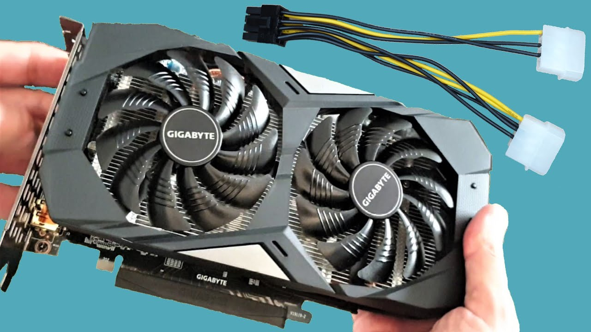
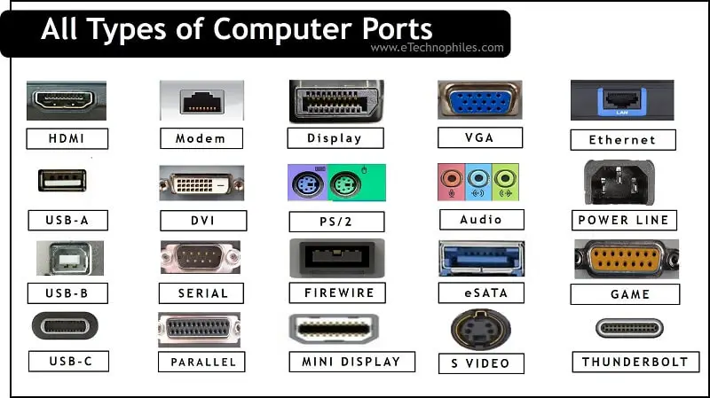
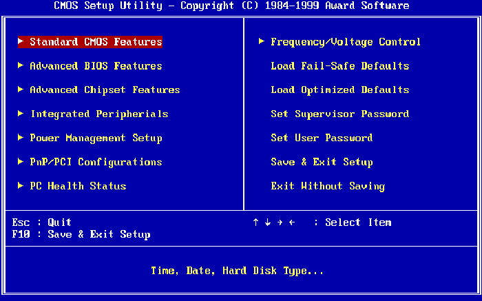
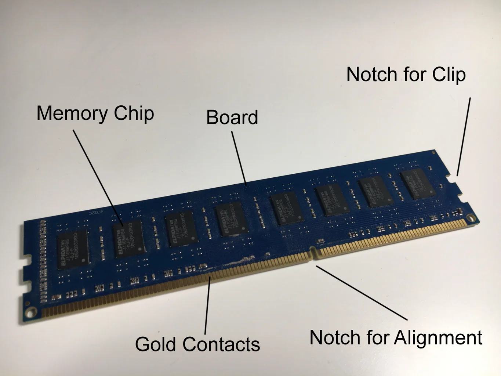

NO DISPLAY OUTPUT TROUBLESHOOT
If your device is turning on but not showing any display output, there could be several possible causes. Follow these steps to troubleshoot and resolve the issue:
Here are some steps you can take to identify and fix the problem of no display output:
- 1. Check the Monitor Connection
Verify cable connections: Ensure that the monitor cable is properly connected to both the monitor and the computer.
Try different cables: If possible, use a different cable (HDMI, DisplayPort, VGA, etc.) to see if the issue is related to the cable.
- 2. Ensure Monitor Power
Check power: Ensure the monitor is powered on, and the power cable is securely connected.
Test with another monitor: If you have another monitor available, try connecting it to determine if the issue is with the monitor itself.
- 3. Restart the System
Reboot the device: A simple restart can resolve many temporary issues that may cause no display output.
Reconnect the display after the restart and check for any changes.
- 4. Check Graphics Card and Cables
Check the graphics card: If you are using a dedicated graphics card, ensure it is properly seated in the PCIe slot.
Check power connectors: If your graphics card requires additional power, ensure that all necessary power cables are securely connected.  - 5. Test Different Output Ports
Try alternate ports: If your computer has multiple display output ports (HDMI, VGA, etc.), try connecting the monitor to a different port.
Test external display: If using a laptop, try connecting it to an external display or projector to check if the issue persists.  - 6. Reset BIOS/CMOS
Reset BIOS settings: In some cases, misconfigured BIOS settings can prevent the display from working. Reset the BIOS to default settings.
Clear CMOS: You can also reset the CMOS by removing the battery on the motherboard for a few minutes, then reconnecting it.  - 7. Inspect RAM and Other Components
Reseat RAM: Sometimes improperly seated RAM can cause boot issues, resulting in no display. Remove and reinstall the RAM modules.
Check other components: Ensure that other components like the CPU and motherboard are functioning correctly. 
If your display remains non-functional after these steps, you may want to consult a technician or refer to your device's manufacturer for further support.